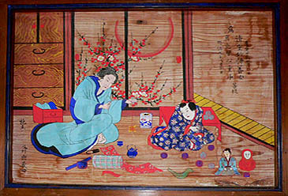
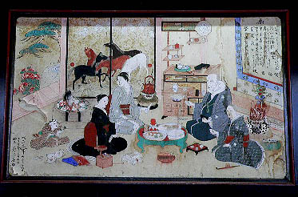

供養絵額；西来院
小友にある西来院は曹洞宗の寺で遠野市内の寺院でも最も絵額の所蔵点数が多い供養絵額最重要拠点といってもいい寺だ。
本堂にの外陣にはたくさんの絵額が飾られてさしずめ絵額ギャラリーと化していた。
そのどれもが岩絵具を使っていて非常に状態がいい。特に青と赤と緑の発色が100年以上前のものとは思えない程素晴らしい。
馬二題。縁側の外に馬がいる風景。
住職に話を伺うと、ここの絵額は殆ど故人の生前の姿を描いたものだという。
この近辺は元々あまり裕福ではない農村なので若干見栄を張って「こんな良い暮らしをしていたんですよ〜」的な表現をしているらしい。

そういわれると確かに過剰なまでに豊かさが演出されているような気がしてきた。
子供の玩具も考え付く限りの種類を引っぱりだして来ているかのような華々しさは、逆に生前満足な暮らしをさせてあげられなかった、または出来なかった故人への憐れみがにじみ出ているのかも知れない。そう考えると派手な絵柄も何か悲しく思えて来る。
この供養絵額の持つ二重の意味はどちらに力点を置くかで絵額自体の意味合いが違って来る。
例えば未婚の人が子供と遊んでいる絵額はあの世での幸福を願ったものとなる。これは山形のムカサリ絵馬や青森の婚礼人形と同じようなスタンスなので比較的判り易い。一方、故人の現世での生活を描写するというのは何の意味があるのだろうか。生前の暮らしを多少誇張して描いた、その真意は一体どこにあるのだろう。これは私見だがこの世の生活を描写した絵額は遺族（または友人）が故人を偲ぶための絵画なのではなかろうか。つまり故人のためというより自分達のための絵額であると考えられないだろうか。近しい人が亡くなって寂しい、だからその故人を思い出すために生前の様子を描いたのではなかろうか。
それがいつしか人目に触れるためにドンドン豪華になってきて見栄の張り合いになってしまったのでは、と考えるとあまりにもミもフタもないですか？
いずれにせよ供養絵額の用途というか効能というか存在意義は奉納する側にあるように思える。

大正5年に奉納された絵額。戒名は6人書かれている。かなり大所帯の絵額だ。老夫婦に女性二人。子供が二人。どういう関係だったのだろうか。
この絵額は大正時代のものだが板に紙張りなので、所々紙が剥がれていて痛んでいるやっぱり板に直描きの方が長持ちするようだ。
いっぽうこちらも紙張りの絵額。左下の茶色くなっているのは紙が剥がれた部分だがその下から戒名が書かれた掛け軸の一部が見える。
恐らく昔の絵額をリサイクルしちゃったんでしょう。
子供と戯れる半裸のオジサン。楽しそうだが子供の戒名はない。
猫を抱く婦人。掛け軸には二人の戒名が書かれている。
供養絵額の製作には何人かの絵師が関わっている。その中でも外川仕候という絵師の作品が頭抜けて多い。ここの住職の話によると仕候は元々武士だったが明治になってから絵師として供養絵額を描き始めたそうだ。
遠野にある供養絵額の3分の1はこの仕候の作だという。
これほどまでに仕候が多くの絵額に関わったのには、その絵師としての技量もあるが、何より絵額の製作をかなり安く請け負ったというのが最大の理由ではなかろうか。一説には今の価格で3万円程の金額で一点モノの絵額を描いたそうだ。後日、遠野市内の仕候の御子孫と会ったのだが今でも仕候の使った道具やデッサン帳のようなものなどが残されているという。
仕候が本格的に絵額製作に関わり始めたのが明治初期。そして明治24年に81才で亡くなるまで絵額を書き続けた。
この時期は遠野の供養絵額が奉納された最盛期と丁度重なる。ある意味、供養絵額のブームを作った人物といってもいいかも知れない。
これが仕候の筆による絵額。襖絵に絵師のプライドが見え隠れ。
没年が嘉永2（1849）年の絵額もあった。供養絵額でも最古の部類に入ろう。この頃はまだ背景が描かれていない。
遠野独自の生活描写型の絵額の誕生これ以降ということになる。
これは額になっていないタイプ。絵馬のようなカタチをしている。銘や没年が記載されていないので年代の特定は出来ないがもしかしたらかなり古いものなのかも知れない。だとしたら供養絵額は元々絵馬型だったのだろうか？
左下の子供が持っているのは遠野の獅子踊りのコスチューム。
さて。
絵額を見ていると住職が供養人形があるとおっしゃるので見せてもらった。
何でも以前は故人に似せた人形を奉納したのだという。
・・・ということはある意味絵額のルーツということですな。
人形の銘を見てみると亨保や安政のものもある。
住職の話を総合するとまず故人に似せた人形を奉納する習慣があり、それが故人を描いた絵馬に変化し、絵額になったという。
絵額の奉納時期は幕末から大正にかけてだという。
その後、大正から昭和にかけては写真や肖像画の遺影を奉納するようになったのだという。見れば本堂の一画に遺影が掲げられている。
この遺影奉納は十数年前まであったが今はやっていないそうだ。
また、他の寺でもかつては絵額がたくさんあったが、建て替えの際に廃棄したり持ち主に返還したりして散逸してしまっているケースも多いという。
供養絵額だけでなく遠野の供養系奉納物の変遷を辿る事のできる、さながら遠野の奉納物博物館のような寺だった。
長泉寺 常楽寺 西来院⇒ 喜清院 光岸寺 善明寺 瑞応院 柳玄寺
供養絵額トップページに戻る
珍寺大道場 HOME